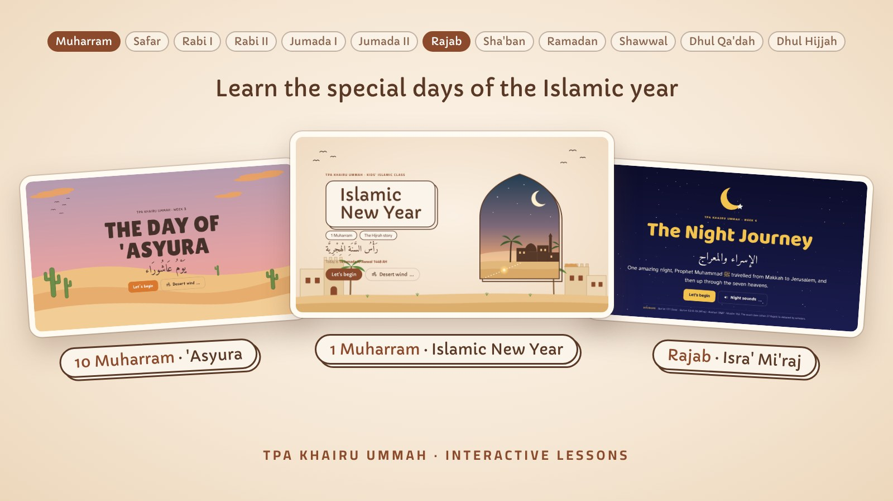

Islamic Calendar
Interactive lessons for TPA kids on the special days of the Hijri year: the Islamic New Year, 'Asyura and Isra' Mi'raj. Each lesson has a story, games and quizzes.
Open hereKeluarga Pelajar Islam Indonesia Sydney (KPII Sydney), since 1995.
KPII Sydney (Keluarga Pelajar Islam Indonesia Sydney) has been established since 1995. It began as a place for Indonesian students around Kingsford, New South Wales, to gather and stay connected.
Over 31 years, KPII has become a second home for hundreds of Indonesian students across universities in Sydney.
KPII Sydney was born from the spirit of Indonesian Muslim students living abroad who wanted a shared space to learn, worship, and support one another.
From regular study circles and TPA (Qur'an classes for children) to social activities and collaborations with the Indonesian community and official institutions such as KJRI Sydney (the Indonesian Consulate General), KPII has grown into a recognised organisation that benefits many.

Interactive lessons for TPA kids on the special days of the Hijri year: the Islamic New Year, 'Asyura and Isra' Mi'raj. Each lesson has a story, games and quizzes.
Open here